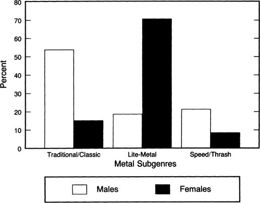

Source: Z-Rock requests for July 16-23, 1990
Classic/Traditional Metal is defined as requests for Black Sabbath (& Ozzy Osbourne), Judas Priest, or Iron Maiden. Lite-Metal is defined as requests for Poison, Bon Jovi, or Mötley Crüe. Speed/Thrash Metal is defined as requests for Suicidal Tendencies, Slayer, or Nuclear Assault.